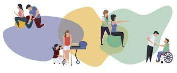
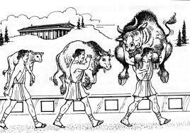

My original goal was to become a physical therapist.
I was very curious about the biomechanics of the human body.
After I finished studying Kinesiology, I became disenchanted.
As we mature, our desires and interests mature with us.
Like many of us here at Treehouse, I find myself absolutely fascinated with web development.
This fascination is sure to bring challenges and excitement.
There really seems to be no limit to what we can accomplish through software manipulation.
If you are not willing to be a fool, you can't become a master.Jordan B. Peterson 